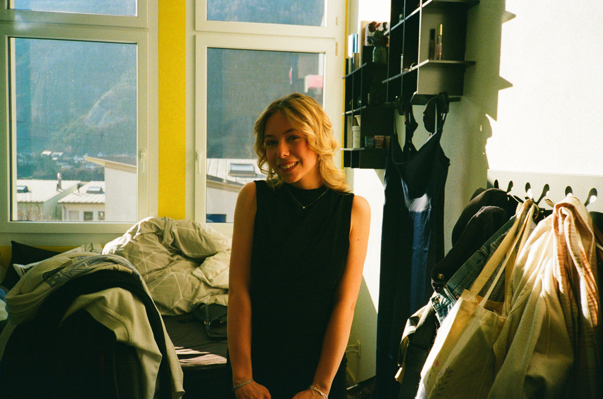

Über mich
Hallo, ich bin Sina
Meine Begeisterung für die Fotografie begann schon früh. Bereits als Kind schnappte ich mir heimlich die kleine Digitalkamera meiner Eltern, um meine ersten Fotoshootings zu veranstalten. Später folgte meine erste Spiegelreflexkamera, bis ich 2022 die analoge Fotografie für mich entdeckte.
Gemeinsam mit meiner besten Freundin verwandelte ich den Keller ihrer WG in eine kleine Dunkelkammer. Zwischen Entwicklerflüssigkeit, Rotlicht und der Vorfreude auf die ersten Bilder begannen wir, unsere Filme selbst zu entwickeln. Heute studiere ich Multimedia Production an der FH Graubünden in Chur.
- Studium MMP · FHGR
- Wohnort Chur
- Lieblingsfilm Portra 400
- Kamera Canon AE-1
Impressum
Verantwortlich für den Inhalt
Sina Kollegger
[Strasse Nr.]
[PLZ Ort]
Schweiz
[E-Mail]
Haftungsausschluss
Die Inhalte dieser Website wurden mit Sorgfalt erstellt. Für Richtigkeit, Vollständigkeit und Aktualität wird keine Gewähr übernommen. Für externe Links sind ausschliesslich deren Betreiber verantwortlich.
Urheberrecht & Kontext
Alle Fotografien © Sina Kollegger. Verwendung nur mit Erlaubnis.
Diese Website ist ein Studienprojekt im Modul IM1 an der FH Graubünden.